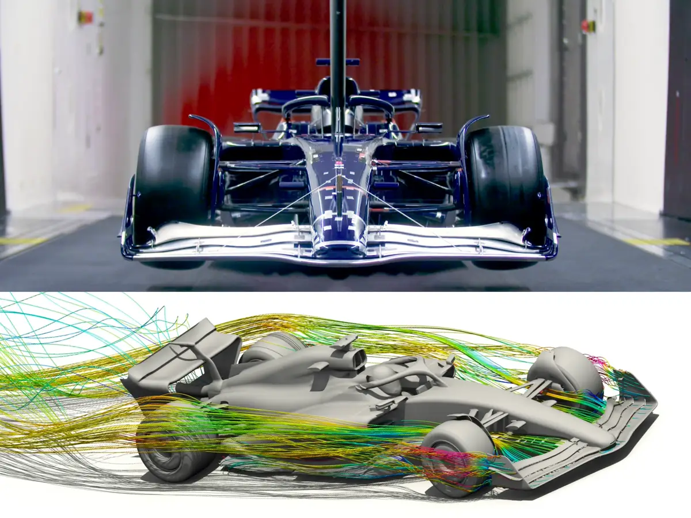

Table of Contents |
|---|
| Abstract |
| Introduction |
| Main Body |
| Conclusion |
| References |
F1 has always been a place where both the mechanics and the drivers are able to push the boundaries of racing. I will be looking into the different ways that aerodynamics has evolved from the start of F1 in the 1950s to today talking about different tools which have helped to create the cars we see today like CFD and wind tunnels, also I will go over some of the many innovations which have been used to increase the overall performance of the cars that have change F1 for ever like the floor, diffuser and the DRS. As well as this I will touch on the exiting future of F1 and how it will change the sport.
Formula one (F1) is not only for entertainment this is also a place for some of the brightest engineers to push their ability to create a car that is able to go quickly down the straights while being smooth through the corners one of the ways they are able to do this is by using aerodynamics. Aerodynamics have changed dramatically from the beginning of F1 in 1950 with a cylindrical shape, which wasn’t very aerodynamic however this was because at this time cars were not going fast enough for mechanics to have to worry about it. However, as the cars got faster the importance of good aerodynamics increased which caused the mechanics to start looking into how the shape of the car changed how well the car performed under different conditions which introduced wings and spoilers and a more streamline design which has led to the design that is seen in today’s F1 cars.
In the late 1960s to 1970s the introduction of simple designs of wings and spoilers to increase the downforce on the car which caused the car to have improved grip and have an increased cornering speed. However, this did cause a lot of accidents which caused there to be a rethink into the rules about aerodynamics (Francks, 2024, para. 8,9,10). In the late 1970s teams leant about the ground effect. “The idea was to shape the underbody of the car to create a low-pressure area, which causes the car to be sucked to the ground, and increase downforce without adding other drag.” (Zhang, 2023, pp. 39–40). However, they did become dangerous if they weren’t setup properly or in some other conditions which caused ground effects to be banned in the early 1980s (Smith, 2023, para. 15). “Over the last three decades, wind tunnel testing has revolutionised Formula 1 design.” (S, 2023, para. 15). This can be seen by looking at F1 cars in the 1990s which had similar designs, with large rear wings and flat bottom but when the teams used the wind tunnels they were able to test lots of different designs for the cars like changing the car to having a curved bottom and an exhaust mounted rear wing “These changes have seen lap times drop from an average of 1:30.00 in the early 1990s to 1:17.00 in 2019, with some cars reaching lap times of 1:14.00 or less.” (S, 2023, para. 16). Also, the use of wind tunnels has meant that teams are able to make the cars more efficient because of the complex designs that were possible because of wind tunnels. Another tool the teams used was CFD (Computational Fluid Dynamics) this is very useful for teams because it means that the team doesn’t have to build the car to put it into a wind tunnel to be able to test the car they are able to create a 3D model of the car and test it using CFD. To use CFD the teams would have to create a 3D model of the car, then create the conditions that it will be in then they would be able to CFD to simulate the airflow around the car and the aerodynamic forces acting on it including the amount of downforce generated (Massobrio, 2024, para. 13,14,15). The floor and the Diffuser are this is because “about 50% of a Formula 1's downforce is created using the aerodynamics under the car. Most of this comes from the floor and diffuser.” (Aerodynamics in F1, 2023, para. 26). The floor is mainly used to generate downforce and improve grip it does this by acting like an inverted wing causing a pressure difference between the top and bottom of the car which increases downforce helping the cars grip and speed in corners. (Aerodynamics in F1, 2023, para. 10). The diffuser is located at the rear of the F1 car and is designed so that it accelerates and widens the airflow under the car which creates a “vacuum and pressing the car more firmly to the ground. This is essential for better grip and stability at high speeds and in corners.” (Aerodynamics in F1, 2023, para. 24). In 2014 hybrid power units were introduced which caused teams to have a big reduction in engine power which caused aerodynamics to be more important because the teams needed to direct airflow to the power units for cooling and it meant that teams had to change the designs of the exhaust, so it didn’t interfere with airflow over the car. (Reports - The evolution of aerodynamics in Formula One - Racing sports cars, no date, para. 12). In 2011 The Drag Reduction System (DRS) was introduced to help cars overtaking because of the aerodynamic turbulence (dirty air) which made it very difficult to overtake so DRS was used to adjust “the angle of a moveable flap on the car’s rear wing. When activating, it reduces the drag on the car, allowing it to achieve higher straight-line speeds. Consequently, the aerodynamic resistance decreases by roughly 20%”. (Zhang, 2023, p. 40). When the 2026 season starts, teams will begin to use active aerodynamics which means that teams are able to modify the car’s aerodynamic features depending on driving conditions. Active aerodynamics has been described as the “Holy Grail of Racing aerodynamics!” (Francks, 2024, para. 17). Because it will change how teams build the cars dramatically.
In conclusion aerodynamics has come a long way from the first F1 car and is still changing with the introduction of active aerodynamics in 2026, it has definitely been one of the most important things on the car because it effects so much for example cornering speed, cornering stability and speed down the straights. Also because of the implementation of DRS, the return of ground effect and active aerodynamics being implemented in 2026 it shows the sports ability to adapt and enhance itself to create a more interesting and competitive sport and it also makes it, so the mechanics are able to push limits creating scientific works of art.
Aerodynamics in F1 (2023). https://racingnews365.com/aerodynamics-f1. (Accessed: 31 Oct 2024)
Francks, T. (2024) 'Evolution of Formula 1 Aerodynamics: past, present and future,' GRANDPRIX247, 16 July. https://www.grandprix247.com/2024/07/15/evolution-of-formula-1-aerodynamics-past-present-and-future/. (Accessed: 31 Oct 2024)
Massobrio, A. (2024) F1 Aerodynamics — Shape Predictions & Optimization With NCS. https://www.neuralconcept.com/post/formula-1-multiple-connected-components-and-long-range-aerodynamic-correlations. (Accessed: 31 Oct 2024)
Reports - The evolution of aerodynamics in Formula One - Racing sports cars (no date). https://www.racingsportscars.com/report/Aerodynamics-Evolution-2025-01-expo.html. (Accessed: 31 Oct 2024)
S, A.K. (2023) Role of aerodynamics in Formula 1 racing: How technology has transformed the design of cars. https://skill-lync.com/blogs/role-of-aerodynamics-in-formula-1-racing-how-technology-has-transformed-the-design-of-cars. (Accessed: 31 Oct 2024)
Smith, J. (2023) 'Unravelling the science behind F1 aerodynamics,' Total Motorsport, 11 August. https://www.total-motorsport.com/unravelling-science-behind-f1-aerodynamics/. (Accessed: 31 Oct 2024)
Zhang, Z. (2023) 'Study on aerodynamic development in Formula One racing,' Theoretical and Natural Science, 14(1), pp. 38–41. https://doi.org/10.54254/2753-8818/14/20240875. (Accessed: 16 Oct 2024).